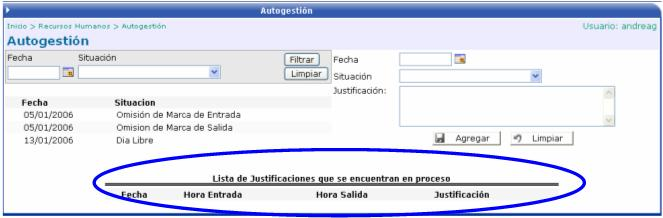

En esta opción tiene relación con el módulo de Control de Marcas. Aquí el usuario (empleado que no sea jefe) tiene la opción de justificar una marca adelantada, ya sea por que se omite la marca de entrada, la marca de salida, un día extra, un día libre, una llegada anticipada, una llegada tardía, una salida anticipada, o por una salida tarde.
Para crear alguno de los anteriores casos, es necesario ingresar una fecha, una situación que puede ser alguna de las antes mencionadas y algún comentario que aclare dicha justificación adelantada:

Posteriormente, cuando el usuario encargado de procesar las marcas las ejecute desde el módulo de Control de Marcas, en la sección marcada con un círculo en la pantalla anterior, se mostrará al usuario las justificaciones que se encuentran en proceso de ejecución.